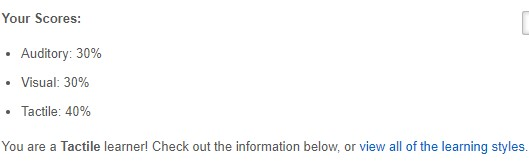
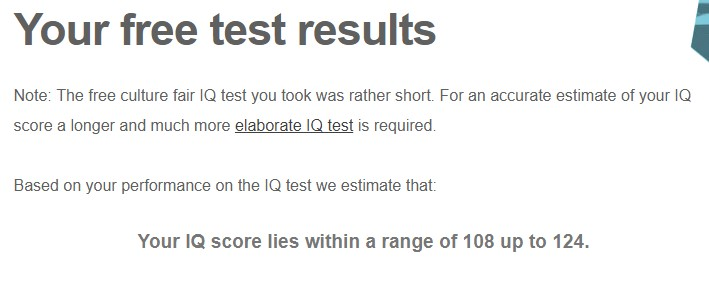

Name: Kenneth Kristopher Chang
Student id: s3669227
Email: s3669227@student.rmit.edu.au
My name is kenneth I am 18-year-old and my nationality is Indonesian. I have been staying in
Melbourne for about 2 years doing my foundation and bachelor’s degree. My mother language is
Bahasa Indonesia, but I can speak English and a little bit of Chinese. My hobby is playing sports such
as badminton, basketball, and football. I also enjoy playing games such as NBA, FIFA, and much more.
I am interested in IT in general but if I must choose a specific thing it would be cyber security. My
interest with technology started since I’m young as I enjoy messing with my computer, tv and such.
The thing that really sparked my interest is the fact that technology is the future and people that
doesn’t know anything about the digital world will have a hard time surviving. I have quite a few
experiences on IT such as programming, console.
The reason why I choose RMIT is because it’s one of the most prestigious school in Melbourne and
RMIT is good for its information technology. RMIT also provides good environment for student to
learn in. It is also located strategically in the middle of Melbourne CBD, so I don’t have to travel far
from my apartment to the university. Before coming to Melbourne, I asked a lot of people’s opinion
on which school is the best for me to attend and majority says RMIT.
I expect to learn IT at a level where I can find jobs in the future. As I am planning to be a cyber
security analyst, I expect to learn most or everything that can be taught at RMIT. I also expect to
learn how to work well with everyone no matter the race or age. Learning responsibilities is a plus as
we will be held responsible for a lot of things in the future.
This job will ask us to help the IT security manager to manage Toyota’s security by analyzing
vulnerabilities and threats and deal with them accordingly. This position is appealing for me because
Toyota is considered a big brand and I can expect good pay while knowing that there won’t be
discrimination there.
This job will acquire us to have couple years of experience in the security industry. We also need to
be able to understand threat, malware and network traffic and deal with them accordingly. Working
with the team is also needed as most of the work will involve us working as a group. Strong
background on networking, systems, virtualization, scripting language, and cloud platforms.
I have little to no experience working as a cyber security analyst, but I have been learning cyber
security stuff such as encryption, threats of cyber security and how to deal with them.
I am now lacking in a lot of skills and experience, but I plan to join cyber security seminars whenever
I have free time and keep on watching cyber security videos so that I can have a better understanding on the field.
I also plan to learn programming on a basic level as it will help me understand cyber security better.
If I have the chance, I would like to be able to experience working as a cyber security analyst so that I won’t be surprised in the future.
Myers-Briggs test
Learning style test
IQ Test
The test result can give us a general idea of who we are. For the Myers-Briggs test, it shows that I am
“The logician” which means that I like to have debate in my head which is true. The logician is also
shy to people who they are not familiar with but once they are familiar with the person, they
become friendly which is very true to me. Some of the description is wrong but most of it are
correct. So, test like the Myers-Briggs and learning style is correct to an extent but it should just be
taken with a grain of salt.
The results will not influence me as I will always try my best to cooperate with my groupmates no
matter who it is. This kind of thinking have always been very successful to me as my groupmates will
also appreciate my effort even though we have different ideas or working styles.
When forming a team, I would pick people who is like me so that we would spend less time arguing
and more time working which produce better result. I would also pick people who are not lazy and
do their work on time so that there will not be a problem inside the group.
Security have always been a problem to deal with when creating a program. Usually when
people create a program, they embed the security at the end of the production cycle. This means
that if there are problems with the security, significant changes need to be made which cause delays
in production. Therefore, I want to create automated security testing (AST) so that people and
businesses can embed their security at all stages of production. To achieve this, I will be making
automated security testing by implementing DevSecOps.
There are various reasons as why I want to do automated security testing as my project. The
first reason is because security is very important to companies and there are many apps that provide
good security such as Avast antivirus, Kaspersky, VPNs and much more, but apps that embed
security at all stages of production are lacking. Therefore, I want to do automated security testing so
that companies don’t have to delay their production which can cost a lot to businesses. The other
reason is because cyber security attacks has been happening more frequently throughout the year.
According to OTA’s Cyber incident & breach trends report the reported number of cyber-attacks in
2017 is 160000 which nearly doubles that of 2016 which is reported to be 82000 attacks. Another
report shows that only 13% of companies uses automated security testing. The number of hacking
will keep on rising throughout the year and automated security testing can minimize the attacks.
Another reason why I want to use DevSecOps is because most people don’t care about security
when creating software as they believe that it will only slow them down which makes them unable
to be ahead of the competitions. DevSecOps is made to change this.
As I said earlier, I will be implementing DevSecOps to my automated security testing. The
purpose of implementing DevSecOps is so that everyone that is included in the development life
cycle is responsible for security.DevSecOps brings operation and development together with security functions by being able
to embed security at the early stages rather than the end. This ensures that no major changes
needed to be made if there is a problem with the security in the program. DevSecOps work by
breaking software into smaller steps. Therefore, businesses should use the automated security testing
by testing piece by piece starting with the smallest ones first and as the automated security testing
develop link them into larger builds that can automate smaller jobs in the product.
This also gives time for people to adjust to the automated security testing. Automated testing is
used at all part of the production cycle to make sure that the software is working as intended.
Automated testing will guarantee that the software is not malicious when operating.
There are a lot of areas in automated security testing, but this are the primary areas of security
testing. The first is application security testing. Application security testing scan the software as it is
being run and ensure that there are no malicious actions. You can use tools such as burp intruder
and OWASP Zap automation to test application and make sure that it will not be perceived as
malicious by users. The second is scanning for appropriate configurations. Software tools can be
used to set up applications correctly and securely. An example is the Microsoft Azure Advisor tool
used for cloud-based infrastructure. The automated testing tools are usually designed to operate in
certain environments, such as web-based environment or mobile environment. So, during the
developing stages of the software, it can be ensured that the software is being made accordingly.
The third is code analysis. Code analysis tools can enhance DevOps security by scanning the code
and determining the vulnerabilities within the code. The tools that can be used for these
are Veracode and RIPS Technologies.
There are 2 choices to be made when wanting to automate security testing. The first is open source
and the second is commercial automation testing tools. Open source tools are more affordable,
robust and well build while commercial have more advance technology and better customer service.
Examples of open source is BDD Security. BDD security is a security testing framework that uses
natural language to describe security function as features. Another example is Selenium which test
web application across different platforms. An example of commercial automation is burp intruder.
Burp intruder is a scanner that ensure applications are interacting well with the environment.
Another example is Ranorex which is designed to be used for desktop and mobile testing. With my
project, I will use open source so that it will be cheaper and is more future proof than commercial automation.
DevSecOps require a broad set of skills. They need the knowledge of an IT security as well as
understandings of DevOps. The first skill that is required is the understanding of DevOps and its
principles. This is very important as we are adding security to DevOps which means that if we don’t
understand DevOps, we will not be able to integrate the security to it. The second skill required is
being able to use programming language such as Python, Java, PHP, Perl and Ruby. This is because
we will try to implement security while developing the software which means that we must at least
understand the basic of programming. Knowledge of threat modelling, risk assessment and
cybersecurity threat are needed as different software needs different protection. Last is being able
to understand programs such as Puppet, Chef, ThreatModeler, Checkmarx, Immunio and Aqua.
This programs are essential to execute DevSecOps.
If this project were to be successful, businesses will no longer ignore security and view it as a
hindrance as everything will be automated from the beginning of the development to the end. This
project will also decrease the number of cyber attacks on companies as it will always check
problem in the software without fail.
Watson, M. (2017). What is DevSecOps? How to Automate Security Testing. [online] Stackify. Available at: https://stackify.com/devsecops-automate-security-testing/.
Drinkwater, D. (2018). What is DevSecOps? Developing more secure applications. [online] CSO Online. Available at: https://www.csoonline.com/article/3245748/what-is-devsecops-developing-more-secure-applications.html
Allen, C. (2018). DevSecOps: Automated Security Testing Best Practices. [online] PhoenixNAP Global IT Systems. Available at: https://phoenixnap.com/blog/devsecops-best-practices-automated-security-testing